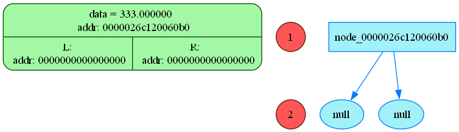

READ_file: addr buffer_adr = 2122742600112
=============================================================================
Symbol = <(>, his addr = 2122742600112
Symbol = <0>, his addr = 2122742600113
Symbol = <*>, his addr = 2122742600114
Symbol = <x>, his addr = 2122742600115
Symbol = <)>, his addr = 2122742600116
Symbol = <+>, his addr = 2122742600117
Symbol = <2>, his addr = 2122742600118
Symbol = <$>, his addr = 2122742600119
symbol = <\r>, addr = 2122742600120
symbol = <\n>, addr = 2122742600121
symbol = <\0>, addr = 2122742600122
=============================================================================

ERROR IN Diff_Simpl.cpp 171